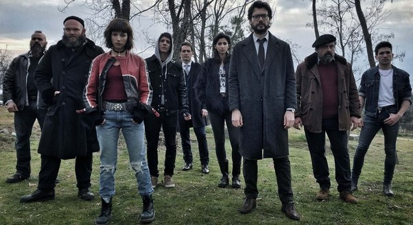

| Stagioni |
Descrizione |
Trailer |
Stagione 1 
|
Dopo cinque mesi trascorsi nella villa di Toledo per pianificare la rapina, gli otto ladri si barricano nella Zecca di Stato,
agendo durante tutto il colpo vestiti di rosso e con una maschera raffigurante il volto del pittore spagnolo Salvador Dalì, mentre
il professore osserva la rapina dall`esterno in un hangar, per controllare che tutto vada liscio, manipolando la polizia al fine di
negoziare. Intanto il professore, tendendo segreta la propria identità con una voce metallica, negozia con la polizia, e l`ispettore
Raquel Murillo è incaricata di risolvere il caso e il professore si innamora di lei quando la incontra al bar per mangiare facendosi chiamare
come nome di copertura Salvador Martìn, e anche Raquel contraccambia l`amore non sapendo che l`uomo di cui si stava innamorando era in realtà
il professore. Il vice-ispettore Angel Rubio scopre con delle indagini l`identità del professore, e in macchina, ubriaco, cerca di
mandare dei vocali a Raquel per dirle che l`uomo di cui si era innamorata era in realtà il professore, ma sterza violentemente e
finisce in coma; alla zecca Arturo riesce a far evadere 16 ostaggi i quali feriscono a morte Oslo, uno dei rapinatori; la polizia tenta
di irrompere nella zecca ma i rapinatori richiudono l`entrata da cui erano fuggiti gli ostaggi e il professore
il giorno dopo cancella i vocali mandati da Angel a Raquel la notte dell`incidente rimettendo la sua identità al sicuro.
|
Clicca qui
|
Stagione 2 
|
Rio, infuriato perché Berlino aveva consegnato la sua ragazza Tokyo alla polizia, spiffera il piano agli ostaggi
per vendetta e viene fatto anche lui ostaggio; il professore riprende i contatti con i ladri dopo aver cancellato
le impronte con cui Angel lo aveva scoperto e scopre l`accaduto: riesce a far liberare Tokyo che torna alla zecca
causando la morte di Mosca, un altro dei rapinatori.
|
Clicca qui
|
Stagione 3 
|
La banda si riunisce quando Rio per colpa di Tokyo viene catturato dalla polizia che lo tortura illegalmente in un posto
ignoto; questa volta il professore, con un piano che il fratello Berlino aveva pianificato in vita decide di rubare l`oro della
banca di Spagna per liberare Rio e negoziare con la polizia. Questa volta l`ispettore incaricato di risolvere il caso è Alicia Sierra
che aveva detenuto Rio che viene fatto entrare nella banca in cambio di alcuni ostaggi.
|
Clicca qui
|
Stagione 4 
|
I ladri medicano Nairobi che si risveglia dal coma; Tokyo assume il comando al posto di Palermo il quale per vendetta
cerca di fuggire lasciando i ladri senza sapere come sarebbe proseguito il piano in quanto soltanto lui e il professore
sapevano come portare a termine il colpo perché Palermo aveva pianificato l`assalto assieme a Berlino e il professore;
dunque viene preso in ostaggio e svela a Gandía, capo della sicurezza della banca incatenato a una conduttura come
liberarsi, e in seguito Palermo viene rimesso al comando ma Gandía spara in testa a Nairobi; in seguito il professore
dopo aver capito che Lisbona era in realtà interrogata dalla polizia la libera e la fa rientrare nella banca con un
elicottero non localizzato dalla polizia. Alicia Sierra dopo una colluttazione con la polizia si dimette e dopo aver
diffamato il nome della polizia diventa ricercata; riesce a localizzare
la posizione dell`hangar del professore e la quarta stagione si conclude con Alicia Sierra che tiene sotto scacco
il professore.
|
Clicca qui
|
Stagione 5 parte 1 
|
La polizia manda un gruppo di militari capitanati dal comandante Sagàsta per fare irruzione nella banca e uccidere
i ladri, con l`ordine di sparare a chiunque porti la maschera di Dalì se si fosse reso necessario; intanto Alicia Sierra ha
in ostaggio il professore nel nascondiglio di quest`ultimo e cerca di
estorcergli invano il piano per mezzo del quale lui e gli altri rapinatori avrebbero portato fuori l`oro dalla banca.
|
Clicca qui
|
Stagione 5 parte 2 
|
Palermo scende a patti con Sagasta che finge di negoziare, quando in realtà aveva pianificato con uno
dei membri sopravvissuti del gruppo di catturare i rapinatori e contattare la polizia per porre fine all`assalto.
Il professore chiede ad Alicia di rintracciare l`oro e di negoziare con Rafael e Tatiana, mentre nel frattempo per
salvare i ladri va a negoziare con la polizia, trovando un accordo: il professore avrebbe restituito allo Stato dei
lingotti di ottone e il furto sarebbe rimasto segreto a tutta la Spagna, dal momento che l`oro era solo un sostegno
psicologico da utilizzare come riserva in caso di bancarotta della nazione, dunque non aveva alcuna utilità concreta.
Quindi la polizia fa uscire i ladri nascondendoli all`interno di sacchi per cadavere, facendo credere a tutti che il
professore e la sua banda abbiano fallito, fa trasportare la banda da alcuni blindati, e finge che l`oro sia stato
recuperato, facendosi credere vittoriosa alla nazione,
quando in realtà il professore e i ladri superstiti a insaputa di tutta la Spagna tornano alla loro vita da miliardari.
|
Clicca qui
|